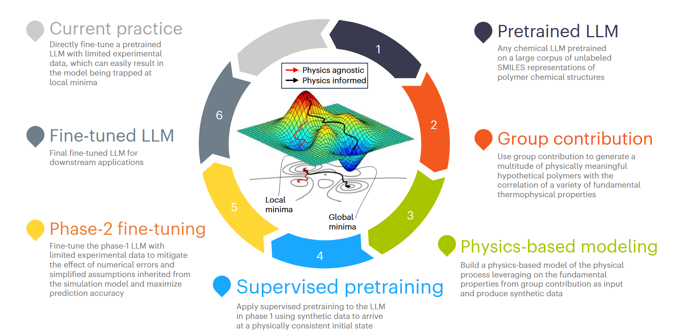
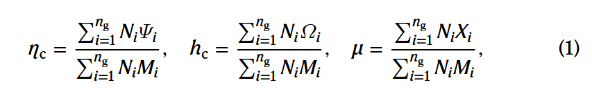
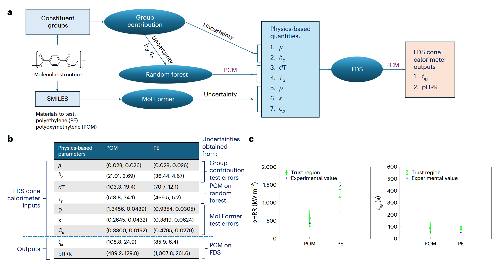
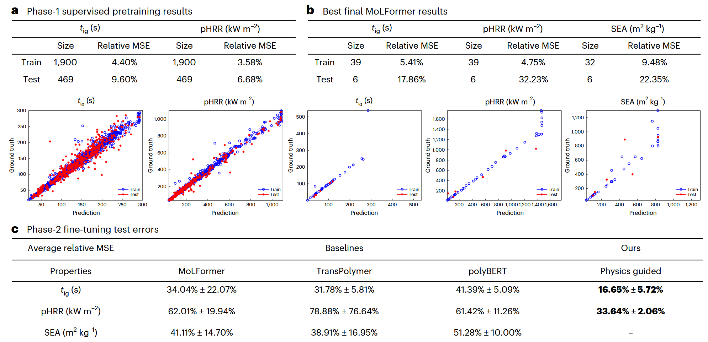

从日常用品到尖端科技，高分子材料无处不在，其性能的精准预测与优化是推动材料创新的关键。机器学习，特别是大型语言模型（LLM），正越来越多地被应用于加速这一进程。通过将复杂的聚合物结构转化为SMILES等文本表示，LLM能够像学习语言一样学习化学结构，并预测其性质。然而，LLM强大的学习能力背后是对海量训练数据的依赖。在材料科学领域，获取大量、高质量的实验数据往往成本高昂且周期漫长，“数据稀缺”成为制约LLM在材料领域大展拳脚的核心瓶颈。如何在实验数据有限的情况下，有效利用LLM进行精准的材料性质预测？一篇题为《Harnessing large language models for data-scarce learning of polymer properties》的研究，为我们带来了一种极具启发性的解决方案：构建一个物理引导的机器学习框架，通过生成大量具有物理意义的合成数据对LLM进行“预训练”，再结合少量实验数据进行“精调”，从而在数据稀缺条件下实现对聚合物性质的高精度预测。
背景：LLM遇上数据稀缺的“窘境”
LLM，如基于Transformer架构的GPT和BERT系列模型，凭借其庞大的参数量和在海量文本数据上的预训练，展现出强大的通用语言理解和生成能力。将聚合物的SMILES字符串输入LLM，模型能够学习其“化学语法”，并通过微调预测其物理、化学性质。
然而，这种“预训练+微调”的范式在材料科学实践中遇到了巨大挑战。LLM动辄千万甚至上亿的参数量，需要大量的标注数据才能充分训练，避免过拟合，并达到所需的预测精度。但对于许多重要的材料性质（例如，特定的燃烧性能、力学响应等），进行大规模实验测量往往成本极高，甚至在技术上不可行。直接使用有限的实验数据微调大型LLM，效果往往不尽人意。
如何弥补数据鸿沟？一个自然的想法是生成合成数据（synthetic data）。但先前的一些尝试，例如随机组合化学片段生成假设聚合物，虽然能进行无监督预训练，但生成的聚合物缺乏明确的物理意义，也难以关联到可计算的物理性质，使得这些合成数据对提升下游任务性能的帮助有限。
核心创新：物理引导的“合成数据生成”+“两阶段训练”
面对这一困境，该研究提出了一种全新的思路，其核心是将物理知识深度融入数据生成和模型训练的全过程，构建了一个巧妙的“三位一体”（LLMs, 物理建模, 实验测量）框架如下图。

LLM数据稀缺学习的三位一体框架概述。步骤1-6说明了与灰色突出显示的当前实践相比，使用三位一体来训练有限数据的LLM的过程。
第一步：生成物理上有意义的假设聚合物与性质标签
研究者没有采用随机组合的方式，而是利用经典的基团贡献法（Group Contribution Method）来生成假设聚合物。基团贡献法基于一个核心假设：化合物的整体性质可以由其构成的官能团（基团）的贡献线性叠加得到。
- 智能生成：通过对已知具有特定化合价的基团进行系统性的、可接受的组合（确保化学结构有效），研究者生成了3,237种结构有效且具有物理意义的假设聚合物。
- 物理性质标注：利用基团贡献法的公式如下，直接为这些假设聚合物计算出其基本的热解动力学参数（如热释放容量ηc, 燃烧热hc, 炭产率μ）。

通过这种方式，研究者不仅获得了大量的聚合物结构数据，更重要的是，这些数据自带了基于物理原理估算的性质标签，为后续的监督学习奠定了基础。
第二步：基于物理模拟生成特定应用场景的合成数据
仅仅有基本物理性质还不够，需要将这些性质与特定应用场景下的宏观性能联系起来。该研究以聚合物防火性能评估（锥形量热仪测试为例：
- 参数补全：锥形量热仪模拟需要更多输入参数，如热物理性质（密度ρ, 热导率κ, 比热容cp）和更详细的热解动力学参数（热解温度范围dT, 峰值质量损失速率温度Tp）。研究者巧妙地结合了：
- 机器学习（随机森林回归器RFR）：学习并预测基团贡献法无法直接给出的dT和Tp（基于ηc, hc）。
- 大型化学语言模型（MoLFormer）：利用在线数据库PolyInfo训练MoLFormer，使其能根据SMILES预测ρ, κ, cp。
- 物理模拟（FDS）：将上述所有参数输入到先进的火灾动力学模拟器（FDS）中，模拟锥形量热仪测试过程。
- 高保真与高效率平衡：先构建包含固相和气相的高保真模型进行验证，然后开发只考虑固相并近似火焰热反馈的降阶模型（ROM）。ROM能在几秒钟内完成一次模拟（相比高保真模型的数小时），从而能够高效地生成大量（聚合物SMILES -> 模拟得到的tig, pHRR）的合成数据集。
- 不确定性量化：研究者还细致地使用概率配点法（PCM）量化了从输入参数误差到最终模拟结果的不确定性传播，并通过与已知聚合物（PE, POM）实验数据的对比.如下图，验证了合成数据生成流程的可靠性。

量化生成的合成数据的不确定性。a-c，一般工作流程（a），基于物理的变量的计算概率分布（以正态分布（均值、标准差）的形式）（b），以及信赖域与实验测量图（c）。
通过这一系列结合了基团贡献、机器学习、LLM预测和物理模拟的步骤，研究者成功地为后续LLM训练生成了大量、带有特定应用性能标签、且具有物理意义和可靠性评估的合成数据集。
第三步：物理引导的两阶段训练策略
拥有了大量的合成数据和有限的实验数据后，研究者提出了核心的两阶段训练策略，旨在最大化利用这两种数据的优势：
- 阶段一：监督式预训练 (Supervised Pretraining)
- 目标：利用大量、物理相关的合成数据（模拟得到的tig, pHRR）对预训练的LLM（本文选用MoLFormer）进行监督式训练。
- 核心思想：这一阶段并非追求绝对精度（因为合成数据本身有误差），而是旨在将物理知识（燃烧动力学规律）隐式地注入模型，引导LLM的参数调整到一个“物理上一致”的初始状态。这相当于让LLM在接触真实实验数据前，先“预习”一遍相关的物理化学原理和趋势。
- 效果：实验表明，经过此阶段训练的模型（见下a）已经能够对可燃性指标做出初步预测，为后续微调奠定了良好基础。

锥形热量计度量预测的培训结果。a–c，第1阶段监督的预训练结果和两个相关图（a），最佳最终MoLFormer结果和三个关联图（b），以及第2阶段微调测试误差（c）。在c中，最佳错误以粗体突出显示。
- 阶段二：微调 (Fine-tuning)
- 目标：利用少量、但高精度的真实实验数据，对第一阶段得到的、已具备物理先验的模型进行精调。
- 核心思想：利用实验数据来修正合成数据和模拟过程带来的系统性偏差，弥补简化假设的影响，将模型的预测能力校准到真实的实验水平，最终最大化预测精度。
- 训练细节：考虑到实验数据稀缺，采用了多次随机划分训练集并报告平均性能的方法，同时选用了更关注低可燃性区域预测精度的相对MSE损失函数（应用导向）。
显著效果：物理引导大幅提升预测精度
为了验证两阶段训练策略的有效性，研究者将其结果与仅使用少量实验数据直接训练的三个SOTA聚合物LLM基线（MoLFormer, TransPolymer, polyBERT）进行了比较，见上图c。
物理引导两阶段训练 vs. 基线LLM性能对比 (相对误差改善)
结果解读：
- 压倒性优势：无论是对比其他SOTA基线，还是对比同模型但仅用实验数据训练的单阶段方法，物理引导的两阶段训练策略都展现出巨大的性能优势，预测误差降低了惊人的45%-50%！
- 物理先验的关键作用：这雄辩地证明了第一阶段的“物理引导预训练”极其有效。通过让LLM先学习合成数据中蕴含的物理规律，即使这些数据不够完美，也足以构建一个非常有利的“初始猜测”，使得后续利用少量实验数据进行微调时能够事半功倍，达到远超直接微调的效果。
- 成功克服数据稀缺：该框架成功地利用易于生成的合成数据弥补了昂贵实验数据的不足，为在数据稀缺条件下应用LLM进行高精度材料性质预测提供了切实可行的解决方案。
讨论与展望：局限性与更广阔的应用
该研究提出的“三位一体”框架（LLMs、物理建模、实验测量）为数据稀缺下的聚合物性质学习开辟了新途径。其核心优势在于巧妙地融合了物理知识与数据驱动学习。
- 优势总结：
- 物理引导：保证了合成数据的物理意义和相关性。
- 两阶段训练：最大化利用合成数据（量）和实验数据（质）的优势。
- 放宽精度要求：第一阶段对合成数据精度要求不高，降低了数据生成门槛。
- 高效预测：显著提升了LLM在数据稀缺下的预测精度。
- 当前局限：
- 目前仅限于可用SMILES表示的聚合物，对于网络聚合物等复杂结构需要更高级的表示方法。
- 基团贡献法的适用范围有限，需要扩展以覆盖更复杂的聚合物。
- 未来潜力：
- 该框架具有良好的通用性，有望推广到预测其他聚合物性质（如力学性能），只需替换相应的物理建模和数据库即可。
- 为其他实验数据稀缺的科学领域提供了借鉴思路：利用领域相关的物理/机理模型生成合成数据进行预训练，再用少量真实数据微调。
客观结语
大型语言模型在材料科学领域展现出巨大潜力，但其对大量标注数据的依赖性是推广应用的主要障碍。本项研究提出的“物理引导两阶段训练”框架，通过创新性地结合基团贡献法、物理模拟（FDS+ROM）、机器学习和大型化学语言模型（MoLFormer），成功地生成了大量具有物理意义的合成数据，并利用这些数据对LLM进行有效的“监督式预训练”，显著提升了其在后续利用少量实验数据进行微调时的性能，尤其是在预测聚合物可燃性这一数据稀缺的典型场景下，精度提升幅度接近50%。
这项工作为解决AI在数据受限的科学研究领域中的应用难题提供了一种富有洞察力且行之有效的策略。它强调了将领域知识（物理模型）与数据驱动方法（LLM）相结合的重要性，展示了如何通过智能的数据生成和分阶段训练来弥补实验数据的不足。虽然该框架目前在表示复杂结构和所依赖的物理模型（基团贡献法）方面尚存局限，但其核心理念——用物理知识指导AI学习，用少量真实数据校准AI预测——具有重要的启发意义和广阔的应用前景。它提示我们，在数据驱动的时代，巧妙地融合先验知识与数据，或许才是解锁AI在复杂科学领域潜能的关键钥匙。